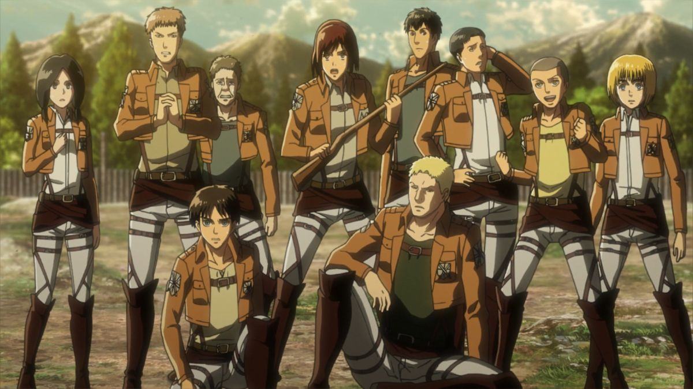

Cadet Corps

About the Cadet Corps
The Cadet Corps is the military training organization responsible for preparing young recruits to become soldiers. Its members undergo intensive training in combat techniques, physical conditioning, hand-to-hand combat, and the use of Vertical Maneuvering Equipment. The training program is designed to develop the skills and discipline required to face the threat of Titans. Cadets are also taught military tactics, teamwork and survival techniques, preparing them for service in one of the three military branches. Training usually lasts three years, after which graduates can choose their preferred military organization. However, only the ten highest-ranking graduates are eligible to join the Military Police Brigade, while the others can enlist in the Garrison Regiment or the Scout Regiment. Several important characters began their military careers as cadets, including Eren Yeager, Mikasa Ackerman, Armin Arlert, Jean Kirstein, Sasha Blouse, Connie Springer, Reiner Braun, Bertholdt Hoover and Annie Leonhart. The Cadet Corps plays an essential role in maintaining the military forces of Paradis, ensuring that new generations of soldiers are prepared to defend humanity.